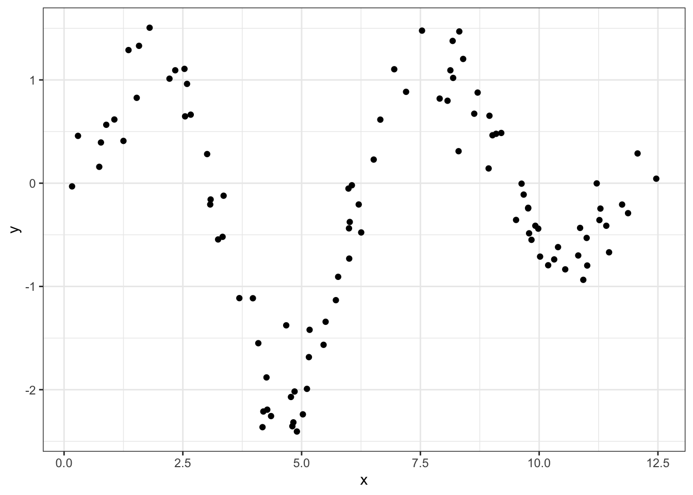
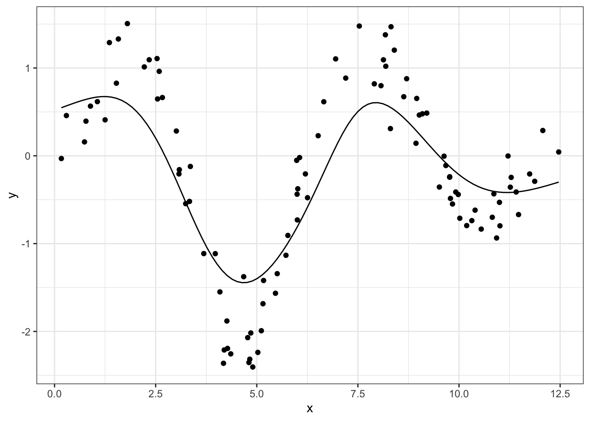
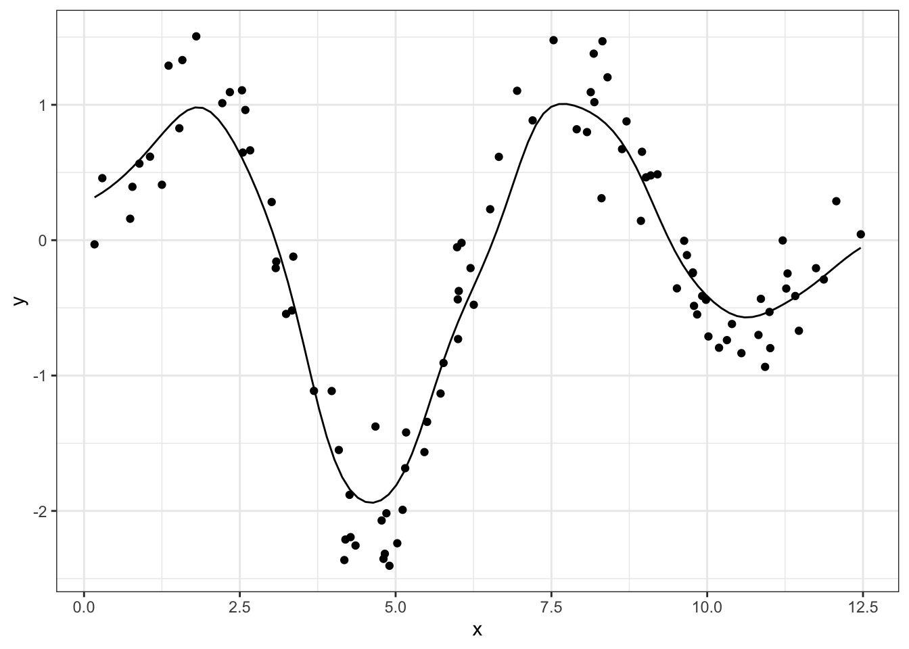
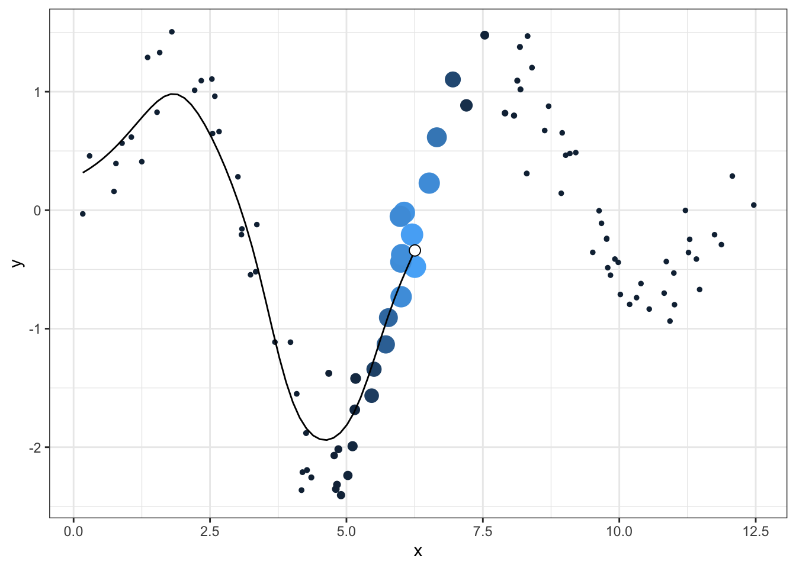

A few years ago, I wrote a script that produced GIFs like the one below that visualize how a kernel smoother draws a line through a series of points:
It was a quick but fun project that actually helped me understand how local regression works, so I figured I’d port it over to my new site and walk through the logic.
It seems a little simple to state, but the point of any (two-dimensional) line is to map x-values to y-values. The challenge of drawing a smooth curve, as opposed to a straight line which could be achieved with ordinary least squares, is to let the line follow the points as it passes through their neighborhoods while ignoring data that is more distant.
The way that kernel regression achieves such “local” effects is by defining a function (typically denoted as \(K\)) that attributes weights to all the existing points based on how close they are to a theoretical new point.
Let’s whip up some actual data to illustrate the concept. We’ll sample x uniformly from 0 to \(4\pi\) (to get two full periods of a trigonometric function), and assign y-values from a sufficiently “wiggly” function along with some noise:
library(tidyverse)
library(magick)
theme_set(theme_bw())
set.seed(0)
n <- 100
x <- runif(n, 0, 4*pi)
# our function is the product of three distinct transformations
y <- sin(x)*x^2*exp(-x/2) + rnorm(n, sd = 0.3)
df <- data.frame(x, y)
df %>%
ggplot(aes(x, y)) +
geom_point()
So how are we gonna trace a line through this data? Well for any point on this theoretical curve, the y-value will be a weighted mean of nearby points. The way we define those weights is with a Gaussian kernel, which uses the useful “bell” shape of a normal distribution to assign greater influence to the existing points that are close to our incoming one.
The kernel is centered at the value of the new point so that the weight is maximized for existing points that are close to the new one, in the same way that the most likely values from a normal distribution are close to its mean. Below, we get the y_smoothed values for a sequence of x_new ponts by defining these weights with the dnorm function and applying them to the respective y-values
x_new <- seq(min(x), max(x), length.out = 100)
# dividing by the sum normalizes the weights to 1
y_smoothed <- map_dbl(x_new, ~sum(dnorm(x, mean = .x) * y)/
sum(dnorm(x, mean = .x)))
df_smoothed <- data.frame(x_new, y_smoothed)Unfortunately, this curve is a little too smoothed, in the sense that the line isn’t permitted to follow the peaks and valleys very closely because it’s being drawn back to intermediate points too heavily.
df %>%
ggplot(aes(x, y)) +
geom_point() +
geom_line(aes(x_new, y_smoothed), data = df_smoothed)
The fix is to reduce the standard deviation argument of our Gaussian kernel, which will tighten the distribution and therefore attribute smaller weights to more distant points:
x_new <- seq(min(x), max(x), length.out = 100)
# same process with a smaller scale (0.5)
y_smoothed <- map_dbl(x_new, ~sum(dnorm(x, mean = .x, sd = 0.5) * y)/
sum(dnorm(x, mean = .x, sd = 0.5)))
df_smoothed <- data.frame(x_new, y_smoothed)
df %>%
ggplot(aes(x, y)) +
geom_point() +
geom_line(aes(x_new, y_smoothed), data = df_smoothed)
Okay let’s make this pretty. At each value ofx_new, we want:
We can handle the first item simply by repeating the dnorm logic used in the smoother and passing it to the size and col aesthetics. After that, we can just add additional data layers while making sure to cut out later data
idx <- 50
df %>%
ggplot(aes(x, y)) +
# original data with size and oclor
geom_point(aes(size = dnorm(x, mean = x_new[idx], sd = 0.5),
col = dnorm(x, mean = x_new[idx], sd = 0.5))) +
# smoothed line up to the new point
geom_line(aes(x_new, y_smoothed),
data = df_smoothed %>% filter(x_new <= x_new[idx])) +
# "head" of the line
geom_point(aes(x_new, y_smoothed),
data = df_smoothed %>% filter(x_new == x_new[idx]),
size = 3, fill = "white", col = "black", shape = 21) +
theme(legend.position = "none")
Now we can just loop over all the new points, make each graph, and save it with ggsave:
for (idx in 1:length(x_new)){
plt <- df %>%
ggplot(aes(x, y)) +
geom_point(aes(size = dnorm(x, mean = x_new[idx], sd = 0.5),
col = dnorm(x, mean = x_new[idx], sd = 0.5))) +
geom_line(aes(x_new, y_smoothed), data = df_smoothed %>% filter(x_new <= x_new[idx])) +
geom_point(aes(x_new, y_smoothed), data = df_smoothed %>% filter(x_new == x_new[idx]),
size = 3, fill = "white", col = "black", shape = 21) +
theme(legend.position = "none")
ggsave(plt, width = 6, height = 4, filename = paste0("kernel_", idx, ".png"))
}Threading all these individual images into a GIF requires the magick package. I used the logic from this post as guidance:
img_files <- paste0("kernel_", 1:length(x_new), ".png")
gif <- img_files %>%
map(image_read) %>%
image_join() %>%
image_animate(fps = 10)
image_write(image = gif,
path = "kernel.gif")And voila!
Most of the joy I got out of making these GIFs, both years ago and more recently, is in manipulating ggplot to create a neat little animation. But I do always also appreciate using methods like kernel smoothers or local regression or nearest-neighbor algorithms because they codify something that I think most people know intuitively: the closer you are to something, the more you can influence it.